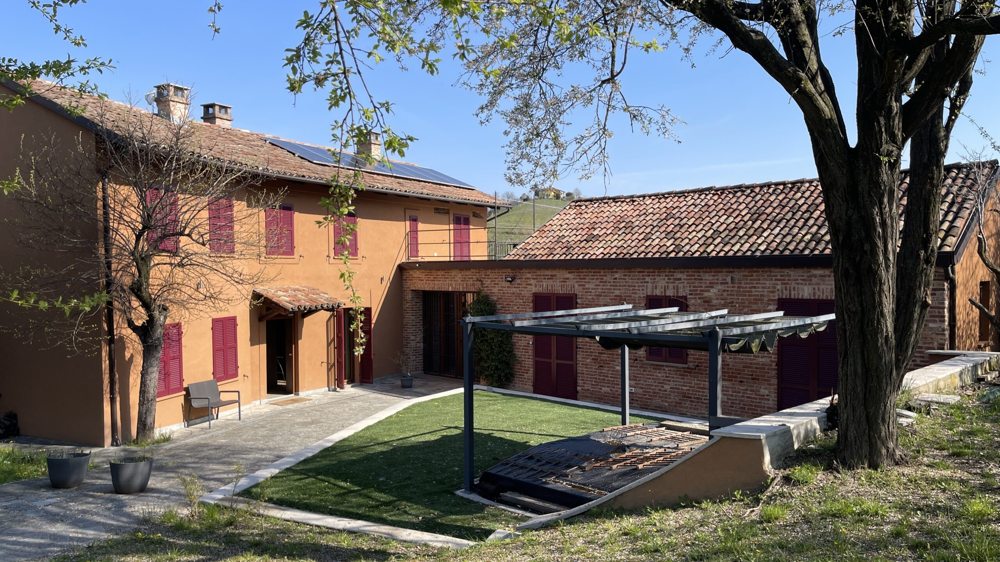

€475.000
Calosso · Piedmont · Italy
Recently renovated Calosso cascina at the Langhe–Monferrato crossroads with authentic terracotta floors, monumental fireplace and exposed-brick vaulted ceilings, plus a built private pool in a fenced garden overlooking UNESCO vineyards — deep Piedmont character that punches hard at €475k.
Opened 14 Sep 2026 on Case in Piemonte; body confirms private outdoor pool (not pool-possible). 290 m² / 3 bed / 4 bath / land ~500 m² garden; full A/C; habitable now. Distinct from board calosso-saltwater-farmhouse (CP-1575 €800k).
Open the listing